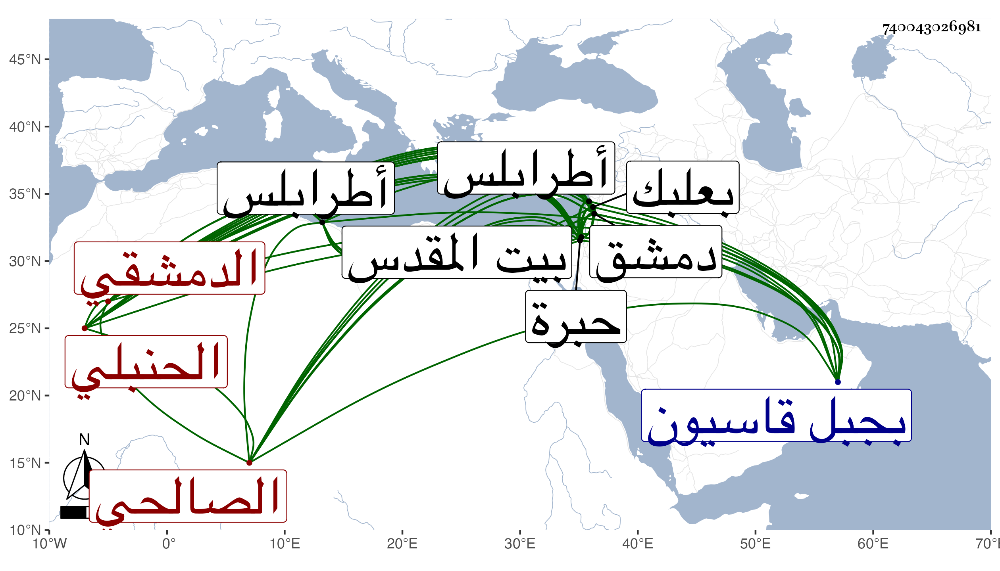

0902Sakhawi.DawLamic.ITO20230111-ara1.EIS1600.740043026981
Biography ID: 740043026981
195
عبد الرحمن بن أبي بكر بن داود الزين أبو الفرج بن التقي أبي الصفا الدمشقي الصالحي الحنبلي الآتي أبوه ويعرف بابن داود . ولد كما كتبه بخطه في سنة اثنتين وثمانين وسبعمائة وقال غيره سنة ثلاث بجبل قاسيون من دمشق ونشأ بها فحفظ القرآن واشتغل وكان يذكر أنه أخذ الفقه عن التقي إبراهيم بن الشمس محمد بن مفلح والعلاء بن اللحام وأخذ عن أبيه التصوف وسمع عليه مؤلفه أدب المريد والمراد في سنة خمس وثمانمائة بطرابلس ومنه تلقن الذكر ولبس الخرقة بل ألبسها معه من الشهاب بن الناصح حين قدومهما عليهما دمشق صحبة الظاهر برقوق ومن البسطامي بزاويته ببيت المقدس وبانفراده في جمادى الأولى سنة تسع وعشرين من ابن الجزري مع قراءته عليه للجزء الذي خرجه من مروياته فيه المسلسل والمصافحة والمشابكة وبعض العشاريات بالباسطية ظاهر دمشق وأول سماعه للحديث بدمشق من المحب الصامت سمع عليه التوبة والمتابة لأبن أبي عاصم وكذا البخاري فيما كان يخبر ثم سمع غالب الصحيح على عائشة ابنة ابن عبد الهادي والجمال بن الشرائحي وسمع ببعلبك على التاج بن بردس وأجاز له أخوه العلاء ولازم الحافظ ابن ناصر الدين في أشياء سماعا وقراءة وخلف والده في مشيخة زاويته التي أنشأها بالسفح فوق جامع الحنابلة فانتفع به المريدون وحج غير مرة وزار بيت المقدس والخليل ودخل غيرها من الأماكن ، وكان شيخا قدوة مسلكا تام العقل والتدبير قائما بالأمر بالمعروف والنهى عن المنكر راغبا في المساعدة على الخير والقيام في الحق مقبول الرسائل نافذ الأوامر كريما متواضعا حسن الخط ذا جلالة ووقع في النفوس وشهرة عند الخاص والعام وله الكنز الأكبر في الأمر بالمعروف والنهي عن المنكر في مجلدين وفتح الاغلاق في الحث على مكارم الأخلاق ومواقع الأنوار ومآثر المختار والانذار بوفاة المصطفى المختار وتحفة العباد وأدلة الأوراد في مجلد ضخم والدر المنتقى المرفوع في أوراد اليوم والليلة والأسبوع ونزهة النفوس والأفكار في خواص الحيوان والنبات والأحجار في ثلاث مجلدات وتسلية الواجم في الطاعون الهاجم في مجلد وغير ذلك مما قرئ عليه جميعه أو أكثره ، وكان استمداده في الحديث من شيخه ابن ناصر الدين ، وقد حدث باليسير أخذ عنه الفضلاء أجاز لي ومات في ليلة الجمعة سلخ ربيع الآخر سنة ست وخمسين بعد فراغه من قراءة أوراد ليلة الجمعة بيسير فجأة ، وصلى عليه بعد صلاة الجمعة بالجامع المظفري في مشهد عظيم جدا ودفن في قبر كان أعده لنفسه داخل باب زاويته رحمه الله وإيانا .
